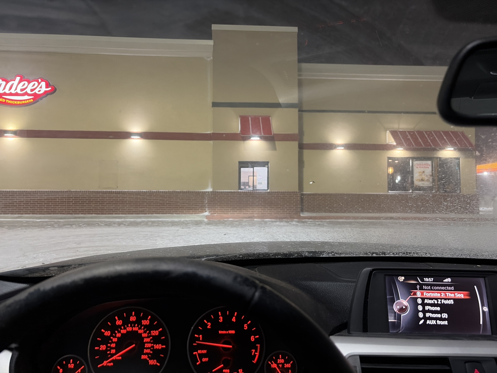
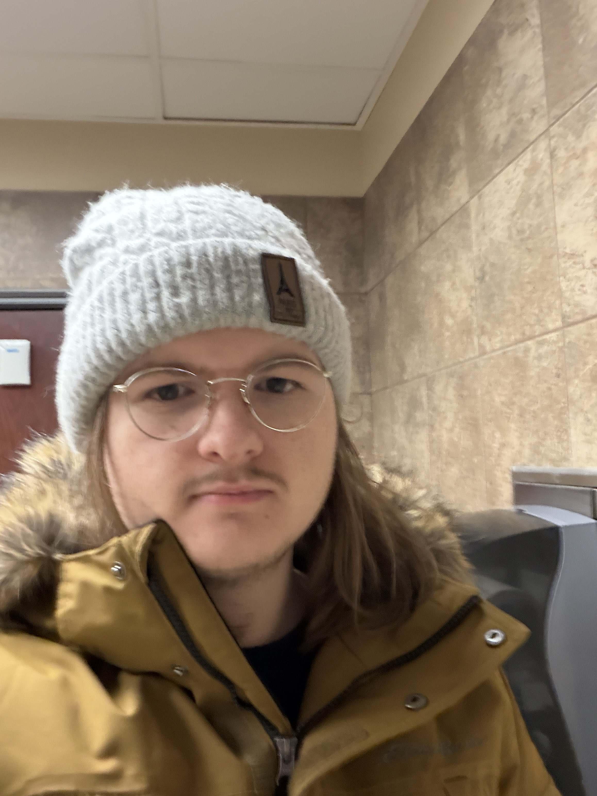
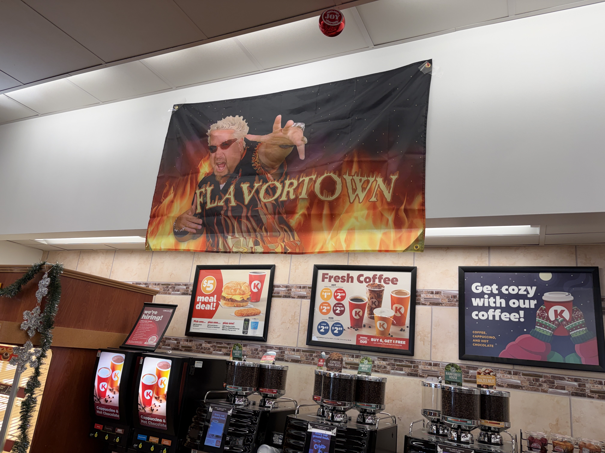
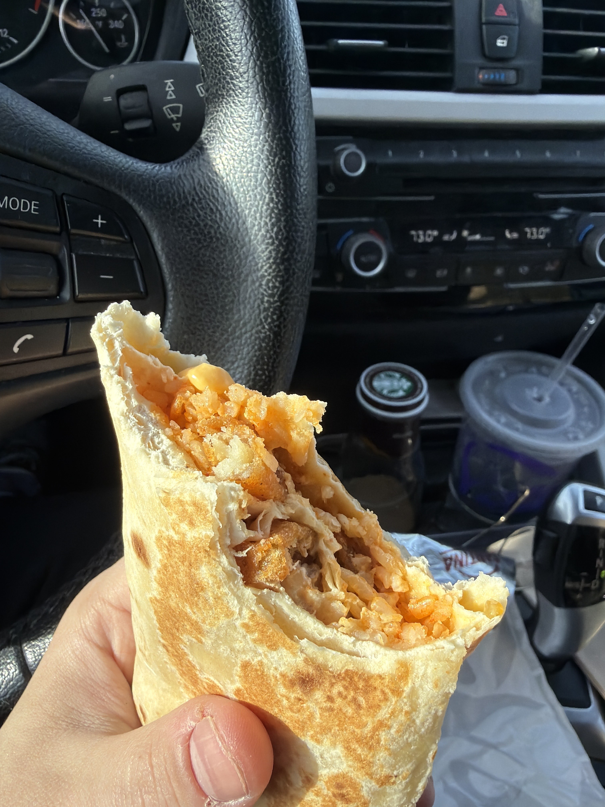
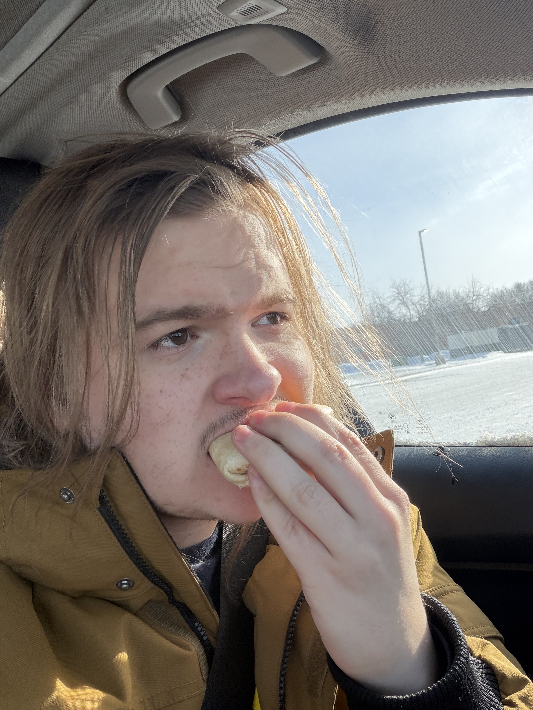
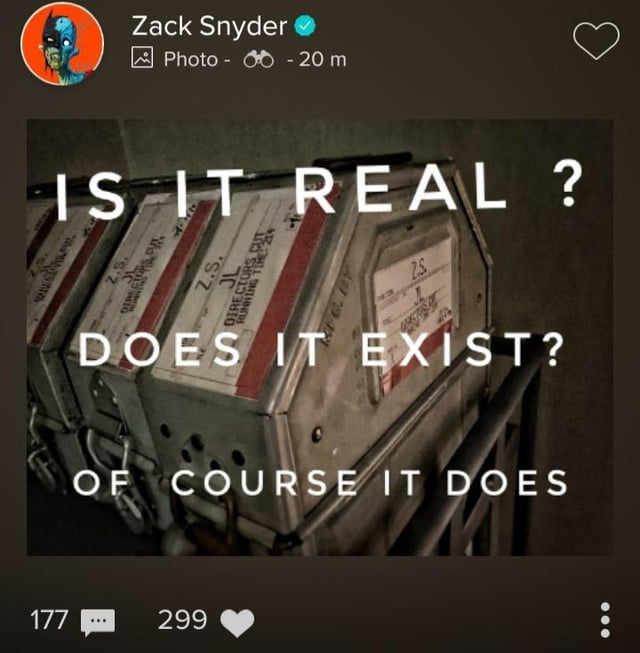

My way back up to Minneapolis from Oklahoma was an arduous 31.5 hour journey through a snow-squall-turned-snowstorm. It was with Bertuch, and you can see the photos of her in gallery005. But. It's time to recount.
I left at 4am on the 28th, after being up for quite a while. Idk. I packed my car in preparation to leave the next afternoon/evening and then I just realized there's nothing I'd rather be doing than leaving the house. I was home alone and would be until I left so, there were no goodbyes or anything. I took my mom's dog out to piss and then brought her in, and turned off the lights, and then I left.
The first like 7 hours of the drive was totally normal. It was an extremely windy day so the drive was very loud. I stopped at the bazaar cattle crossing with bertuch in the extremely early morning, in the Flint Hills of Kansas, probably the prettiest place in the world in my opinion. I had no idea what the rest of the trip would hold.
Right as I got into Iowa a snow squall started. Heavy snow and then extreme wind, which was okay, I thought. It was actually the start of a snowstorm. And, before I knew it, I-35 through Kansas was closed. And it would remain closed through to the end of the road trip. I initially took some rural roads east of I-35 to try and make progress towards Austin, MN, where I could sleep at my aunt's, but as I drove it got really really quite bad. I went through some bumfuck nowhere towns before going back towards I-35 to a Love's right next to it. And I stayed at that Love's for about 6 hours.

View of Love's 💗
I bought some paper towels for Bertuch to play with in the back of my car while we were parked, half because I wanted to give her enrichment, half because if she pissed I would need to clean it, obviously. She didn't up peeing at all the entire 31.5 hours, which, dunno how, but wow she's a fucking trooper. I made plans with a guy I was talking on Hinge with to play Fortnite, but he apparently has notifications broken so he stood me up (for the second time). We later DID play Fortnite, yesterday, and it went really well, so in the end I DID start a Fortnituationship, so all's well. But it was a huge bummer at the time and I was very sad.
After failing to sleep due to leg pain (I get really really bad pain in my left leg after driving for ~3+ hours, which I soldier through most road trips), I decided to try and make it north through the left side of I-35. And here's the part that I absolutely should not have done, and it was honestly super dangerous and I'm extremely lucky nothing bad happened, uh, so, never doing that again. But as a foreword, it was really type 2 fun and engaging and I look back on it fondly now.
So yeah I went west and then north. I followed an oil tanker for like an hour and a half. The wind and the snow was so heavy I could not see in front of my car sometimes, except for its lights ahead of me. So. Thank you random oil tanker. Eventually we turned right, east of a town called Clarion, and the oil tanker got stuck. And then the police guy who helped out the oil tanker told me and the guy behind me that they were close off the road, and that we'd have to figure out a different way north. I then headed to the Casey's in Clarion and used the bathroom and then when checking out with some food, the cashier told me that the snowplows were called off until 4am the next day, so. The roads would not even start getting cleared for the next 6 hours (it was 10pm). So I settled in, with Bertuch, in that Casey's parking lot. And we waited.

Selfie from the Casey's bathroom which smelled like concentrated fish it was sooooo fucking gross
I ended up sleeping until about 9am. It was intermittent, with me first sleeping for 2 hours (though my dream felt wayyyyyy longer), then playing Xenoblade X on my switch, then sleeping for like 7 hours, then waking up at 9am. It was weird, sleeping in a packed car in below-0-windchill weather. The doors were locked and everything, and I was hella clothes, and had a blanket and a pillow, but I was still cold. Bertuch slept on me which was wonderful and I love her so much. It was probably super fucking dangerous to do that with the car off buttttt I lived so whatever. By 9am on the 29th the road east was cleared, and me and Bertuch headed off.
Took about 3 hours to make it to Owatonna, where the roads cleared up a shitton. I-35 opened up right before Albert Lea, but uh it was super fucking icy and I nearly crashed twice. Didn't though. When I made it to Owatonna I went inside a Circle K to pee (I pee a lot), and they had this flag up in the Circle K.

The flag 🏴
Right next to the Circle K was a Taco Bell so I went there and the quesarito was back. I had no idea, but it just was. And I got it and it was euphoric. From the Bencord: "The quesarito's back / This is my reward for not dying in a snowbank / I am crying / It's been so long / God is good and all is right in the world". I then posted the Zack Snyder Justice League film reel photo because that was the vibe.


The quesarito and me eating it 🌯

The image I posted. I'm not a Zack Snyder fan but this is such a specific emotion.
I then drove into Minneapolis and felt true euphoria in a way I haven't since SGDQ. I really needed that, getting trapped in a snowstorm in Iowa. I felt the urge to live coming back up to Minneapolis, more than just the urge to not die. I was so content and free.
And then I made it back home and I brought Bertuch in and played Fortnite for like 6 hours. And I had that Fortnite date with the guy from Hinge and it went realllyyyy well and then I got more taco bell for dinner and had a second quesarito and then went to bed. And now it's today.
Never again will I have a road trip like this, because it was super fucking dangerous and I made so many unforced extreme risks. But I would do again metaphorically. It healed me. I needed it.